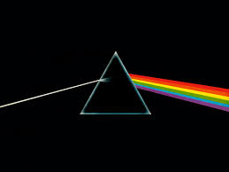

Part 1
Before we dive into the depths of FIR or IIR filtering, let's talk about audio in general.
We have this custom in Audio engineering of analysing everything in the frequency domain. Apparently something we inherited from Electrical engineering. It does seem quite logical though, after all music is all about sine waves, right?
Wrong!
Look at some recording you made with your favourite DAW (audacity f.e.)
The signal (in stereo) can look something like this. It is the equivalent in voltage to the air pressure or eventually the position of your eardrum of the stuff we call sound. No sine wave insight is there?
Another argument against the preoccupation by analysis in the frequency domain could be: tell me the frequency of a handclap or the whistling wind or all the consonants we use...
Should we stop talking about sound in the frequency domain? No! But do realize we are using a model of reality when we do.
Years ago by work of Helmholtz and Fourier the method of decomposing a chunk of a recording like in the picture above into it's sinusoidal components has been worked out. (in fact Helmholtz has written a paper on what happens after this decomposition, look for 'auditory roughness' )


And we now all have the computational power of using this analysis by FFT. If you are totally compelled by any mathematics whatsoever, think about FFT as follows: Imagine a prism. It decomposes a light beam into the different waves it is build up with into these well known rainbows. The FFT engine works a similar way in that it decomposes a chunk of audio into it's sinusoidal components.
Now on to the topic at hand.
In some other parts in this blog you can read about the use of a (dual) FFT analyser in how to get a frequency domain analyses of your device under test. In diy loudspeaker circles a more common use will be Room EQ Wizard, REW to obtain what they call frequency response (commonly abbreviated to FR). Mostly they forget about the 'phase' part of the bode plot.
That isn't really a bad thing. As for the most part a loudspeaker (and filtering) behave as minimum phase systems. Minimum phase (not minimal!) means that the phase response is dictated by the frequency (magnitude) response and vice versa.
So a FR measurement also holds the information to derive the associated phase response. No magic here, just plain laws of physics. So every deviation you see from the frequency response must have a corresponding phase deviation from that so desired 0 phase line. (all under the premise of 'minimum phase' or LTI)

There is 1 big exception: All pass filters! All pass filters will have a typical phase response WITHOUT anything reflected in the frequency response. And vice versa. If you think about it: an ideally crossed multi speaker system will have a flat FR and a overall All Pass phase behaviour. (as long as conventional,IIR filters are used) Maybe something like this for a 2-way system:
If you are still uncomfortable with the concept of phase, don't worry to much. Just don't confuse phase and delay. Like defined elsewhere in this blog: we use the word phase (-difference) for that part of the overall frequency dependent time difference between two components where plain, simple 'excess delay' is stripped away. So:
Time alignment does not equal Phase alignment !!
('time' alignment as a scientific term is a bit Einstein-esque , it is signal alignment..but hey..)
...onto FIR filtering part2